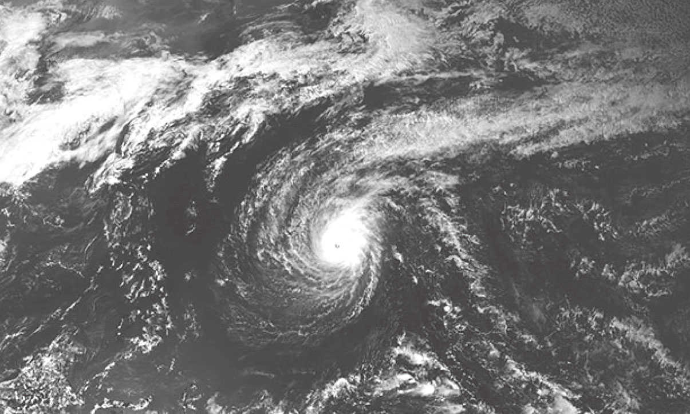
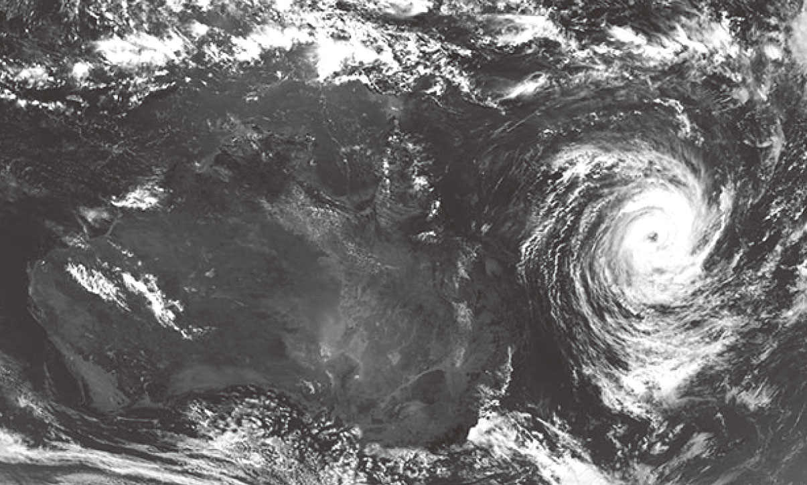
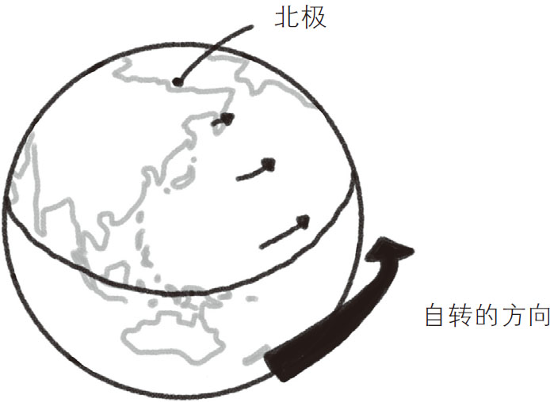
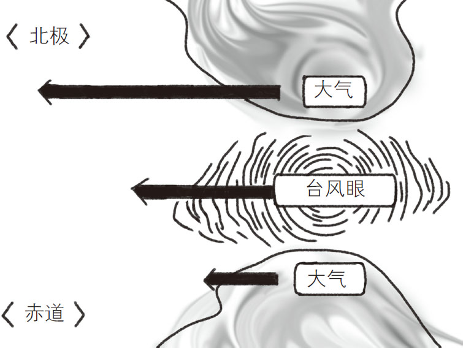
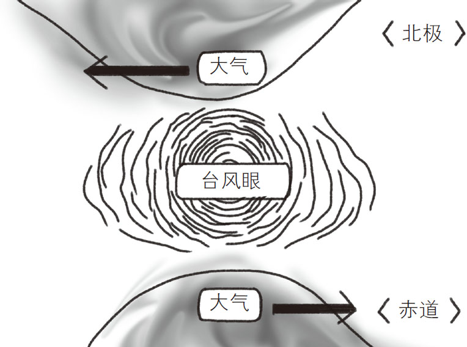

每年一到夏天，就会听到各种台风影响沿海城市的新闻。台风的频繁来袭让大多数人厌烦。可是也有些人在刮台风的时候异常兴奋，专门跑出去寻找刺激，希望他们能注意安全。
随着科技的不断进步，如今通过气象卫星或空间站就能对台风全貌进行拍摄，我们也可以在网络上看到台风的照片。细心的人会发现，南半球和北半球的台风旋涡方向是不一样的。例如，北半球的日本上空的台风旋涡一定是逆时针方向的 ，如图3-10所示；而南半球的澳大利亚上空的台风旋涡一定是顺时针方向的 ，如图3-11所示。所以，很多人认为，除台风外，北半球的大气旋涡、水漩涡也一定是逆时针方向的，而南半球的则是顺时针方向的。

图3-10 北半球的台风（2019年2月25日，台风2号）
［图片来源：信息通信研究机构（NICT）］

图3-11 南半球的台风（2019年2月19日，气旋“沃玛”）
［图片来源：信息通信研究机构（NICT）］
为什么北半球和南半球各种旋涡的方向不同呢？这与地球自转产生的“科里奥利力 ”有关。所谓科里奥利力，是由于地球自身的旋转使得地面上的运动产生偏移而引入的一种假想的力 。单凭这些是很难理解它的，下面我们借助视觉影像来对其进行研究。
假如你在北极用极大的弹跳力飞上天，当到达平流层时俯瞰地球，你就会发现地球是沿逆时针方向旋转的。
接下来，在地球上的北极向南极方向抛一个球，如图3-12所示。最后发现球没有落在正南方向上，为什么会这样呢？这是由于球在飞出去的同时，由于地球的自转，地面发生了移动，导致球不会落到正南方，而是落在正南偏西（球飞出去的方向右手边）的某个位置上。如果从宇宙空间（宇航员视角）看这个抛球的过程，会认为运动的是地面，而球是沿直线飞行的。但在地球上的抛球人看来，球飞行的轨迹是向右方偏移的。也就是说，有一种看起来向右的力量作用在了球上。这种由于地球自转而产生的作用于运动物体上的力就是科里奥利力，也就是地转偏向力。这种力不是以“神的视角”感受到的，而是以人的视角感受到的一种假想的力。

图3-12 科里奥利力作用于南北向运动的物体上
科里奥利力在北极和南极最为明显，越接近赤道越弱 ，到了赤道就变成零了。因为赤道上的人随着地球自转，自身也在围绕地轴向东运动。当物体运动方向与旋转轴方向平行时，科里奥利力为零。所以，如果站在赤道上抛球，球一开始就会在地球的自转方向上由于动量而向东飞去，自然不会产生科里奥利力。而两极由于位于地球自转轴的两端，不受地球自转的影响，自然不会在此方向上有动量，所以产生了科里奥利力。
在对科里奥利力有了初步的认识之后，我们来思考一下，为什么北半球台风的旋涡是逆时针方向的？台风是一种吹向低气压的、强烈的风暴 。天气预报中经常会提到高气压和低气压这样的术语。所谓高气压是指目标区域的气压比周围更高（空气密度高），而低气压是指目标区域的气压比周围更低（空气密度低）。空气总是由密度高的地方向密度低的地方流动，所以会刮起由高气压吹向低气压的风 。
当多种气象条件共同作用而形成极端低气压区域时，周围的空气就会向低气压中心急剧移动，产生暴风，也就是台风。如果没有科里奥利力的作用，外围的空气会直逼台风眼（低气压中心）。但因为受到科里奥利力的影响，而且其强度离赤道越近会越弱，所以在北半球就会出现如图3-13所示的景象。

图3-13 北半球的科里奥利力
需要注意的是，台风眼也会受到科里奥利力的影响而逐渐移动 。为了观察台风眼周围的大气状况，我们暂且忽略台风眼附近的科里奥利力，如图3-14所示。北面大气的左方向上和南面大气的右方向上都受到了力。南面大气受到的其实也是向左的科里奥利力，但比台风眼受到的科里奥利力弱，所以如果不考虑台风眼附近的科里奥利力，完全可以认为其受到了向右的力。结果是台风眼周围产生了向左的回旋力，所以台风漩涡是逆时针方向的。

图3-14 在台风眼的位置看到的大气流动方向
类似的道理，在南半球，北面是赤道，南面是南极，科里奥利力的影响方向、大小正好与北半球相反，所以南半球产生的就是顺时针方向的台风旋涡。
值得注意的是，地球自转产生的科里奥利力非常弱。除非像台风这样的大规模现象，以及长距离飞行的弹道导弹的轨道，我们日常生活中形成的各种小旋涡基本不受到它的影响。所以“北半球的旋涡一定是逆时针方向的”这一说法缺乏科学依据。洗手池、浴缸、游泳池在放水的时候都会形成漩涡，但是这些漩涡有时是顺时针方向的，有时是逆时针方向的，并且南北半球几乎没有区别。当然，科学家们通过周密的安排排除掉科里奥利力之外的影响后进行实验时，哪怕是浴缸中的小漩涡，也可以观察到受科里奥利力影响的结果：在北半球是逆时针的，在南半球是顺时针的。